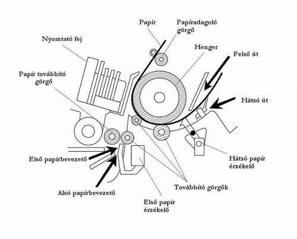

Nyomtatók
A nyomtató egy elektronikai eszköz, ami a számítógéptől kapott utasítások alapján egy papír felületen jelenít meg dokumentumokat vagy képeket.
A nyomtató felépítése látható
Nyomtatók főbb paraméterei
Felbontás: A nyomtató felbontása a kinyomtatott dokumentum vagy kép minőségét jelzi. A nyomtató felbontásának mértékegysége a DPI (dot per inch). Azt mutatja meg, hogy a nyomtató egy inch (2,54 cm) hosszúságú szakaszon hány darab apró képpont megjelenítésére képes. Gyakran használt értékek a 300 600 vagy 1200 DPI.
Nyomtatás sebessége: A nyomtatás sebességét lap/percben mérjük. Ezt sok tényező befolyásolhatja. Pl.:
- Színes vagy szürke dokumentumokat nyomtatunk.
- A dokumentumokat milyen minőségben szeretnénk a papíron megjeleníteni.
- A nyomtatni kívánt papírnak csak az egyik, vagy mindkettő oldalára szeretnék-e nyomtatni.
- A számítógép és a nyomtató közötti kapcsolat sebessége.
- A kinyomtatni kívánt dokumentum, mennyi oldalt tartalmaz. Egy oldalon mennyi szöveg található.
- Az operációs rendszer típusa.
Főbb típusai
A nyomtatók különböznek méretben, sebességben és természetesen árban is.
Mátrix nyomtató
A nyomtatófejben apró tűk helyezkednek el, általánosan 9 vagy 24 db. A papír előtt egy kifeszített festékszalag helyezkedik el, amelyre ezek a tűk ráütnek, és létrehoznak a papíron egy képpontot. A tűket a megfelelő irányba elektromágnesek segítségével mozgassuk.
Előnyei:
- Ár érték arány
- Sok helyen használják őket
Hátrányai:
- Gyenge a kinyomtatott képek felbontása
Tintasugaras nyomtató
A tintasugaras nyomtatók folyékony halmazállapotú festéket
tartalmazó tintapatronokat alkalmaznak a kívánt kép megjelenítésére.
Ezek a patronok a papír felett oldalirányban mozognak, majd a
megfelelő pozícióban apró porlasztott tintacseppeket visznek fel a
felületre. A tintasugaras nyomtató létezik színes változatban is.
Ennél a típusnál négy különböző színű tintából keveri ki a kívánt
színárnyalatot. Ezek a kék, bíborvörös, sárga és fekete színek.
Előnyei közé tartozik, hogy halkan és gyorsan nyomtat. A hátrányok
főleg a tintapatronok miatt jönnek elő, pl.: hamar beszáradnak és
elég drágák, ha a nyomatot nedvesség éri a festék elmosódik.
Szilárdtintás nyomtató
A szilárdtintás nyomtatók szilárd halmazállapotú műgyanta vagy viasz alapú festékanyagot használnak. A nyomtató felolvasztja a szilárd tintát. A tintát a nyomtatófejek ráporlasztják egy olajozott dobra. A papírt egy henger segítségével rányomják a dobra, amelyre ezáltal rákerül a tinta, és pillanatok alatt rögzül.
Előnyei:
- Nagyon jó minőségben nyomtat
- Nyomat nedvesség hatására sem kenődik el
Hátrányai:
- Magas az energia fogyasztása
- Lassan melegszik fel
- Magas a nyomtatási költsége
Lézernyomtató
A lézernyomtató az egyik legmodernebb nyomtató. Megbízhatósága és
kedvező ár érték aránya miatt nagyon közkedvelt. A lézernyomtatóban
speciális, fényérzékeny anyaggal bevont henger található. A henger
bizonyos részeit a nyomtatási képnek megfelelően elektromosan
feltöltjük egy lézersugár segítségével. A feltöltött felületekre a
szilárd halma- zállapotú festékpor rátapad, majd innen rákerül a
papírra. A papír áthalad egy 200 °C-os beégető hengerpár között,
ennek hatására a festékpor beleolvad annak rostjaiba. A
lézernyomtató rendelkezik színes változattal is, amelyben négy
közönséges lézernyomtató henger található. A színek a négy
festékhengerről kerülnek fel a papír felületre. A hengerek színe a
következő: cián, magenta, sárga és fekete.
Nagyon sok előnnyel rendelkezik: pontos, gyors, jó minőségű nyomatot
készít. Egy hátránya van, hogy nyomtatás során ózont termel, ami
nagy mennyiségben mérgező.
Nyomtató nyelvek
A nyomtató nyelvek parancsokat szolgáltatnak a számítógéptől a nyomtató számára. Ezek a parancsok formázzák a kinyomtatandó dokumentumok méretét és grafikai beállításait. A kettő leginkább elterjedt nyomtató nyelv a PostScript és a PCL.
PostScript
A PostScript egy nyomtató nyelv, amely angol utasításokat használ, hogy vezérelje a nyomtatót. A nyelv 1985-ben lett kifejlesztve az Adobe által. A mai nyomtatók gyárilag vannak beállítva a PostScript támogatására. Ezt a nyomtató nyelvet rajzgépeknél is lehet használni.
PCL
A PCL egy escape nyomtató nyelv, mivel minden új parancs a billentyűzeten az esc lenyomásával kezdődik. A HP fejlesztette ki főleg mátrix nyomtatókra, de manapság nagyon elterjedt és más típusoknál is használatosak.
Betűtípusok
A betűtípus egy karakterkészlet specifikus stílusa és mérete, amit a dokumentumok készítésénél használunk. A nyomtató képes natív és lágy betűtípusok alkalmazására. A natív betűtípusok a nyomtatókban gyárilag telepítve vannak, ezáltal nem tudjuk őket kitörölni. A másik lehetőség az úgynevezett lágy betűtípusok használata, amelyeket a számítógép háttértárolójára telepíthetünk és nyomtatásnál elküldjük őket a nyomtatónak. Ezeket a betűtípusokat szabadon törölhessük és cserélhessük.